NewKeys- — captures de la session
Rendu Compose reel, 891x411 (moitie de la resolution native). Setlists volontairement exclu.
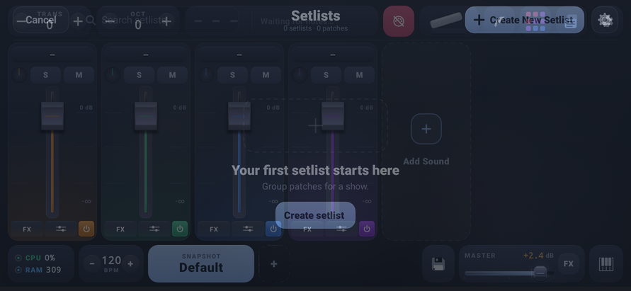
Mixer — 4 pistes, reliefs et plaque de nom
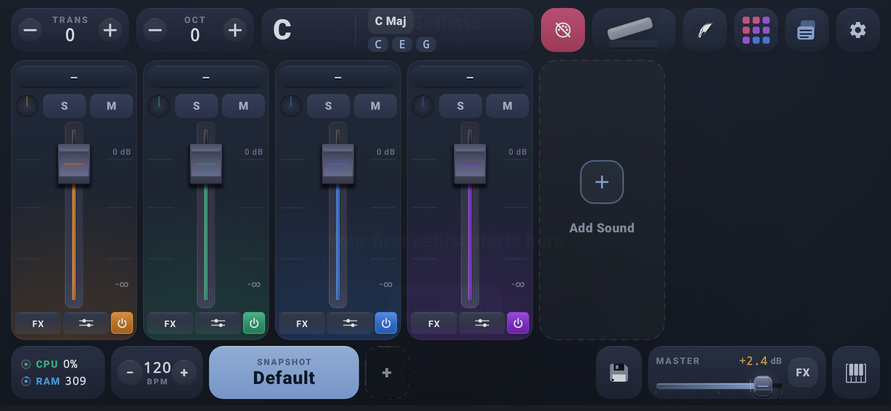
Mixer — pastille d'accord C-E-G
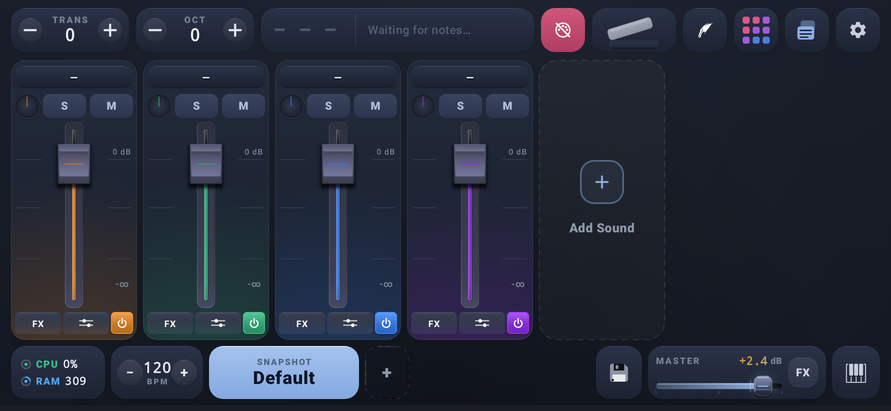
Mixer — sustain actif par le bouton (pedale enfoncee)
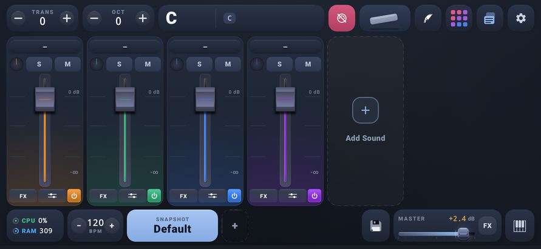
Mixer — sustain declenche par le pedalier MIDI externe (CC64)
DrumPad — TonicPad bleu ciel + 16 pads
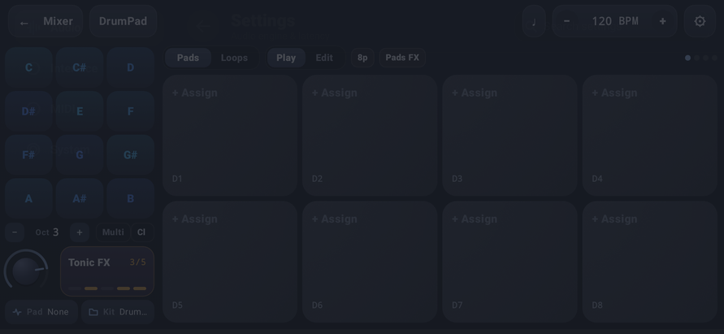
Settings
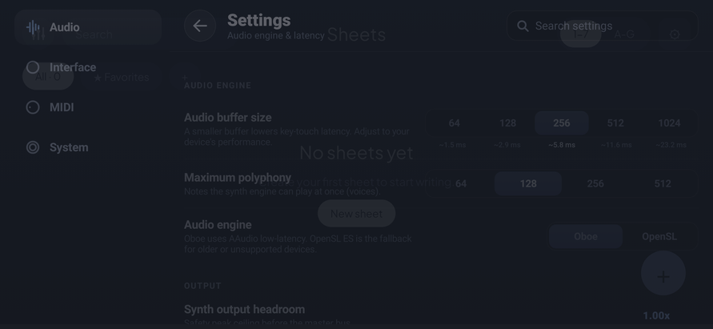
Sheets
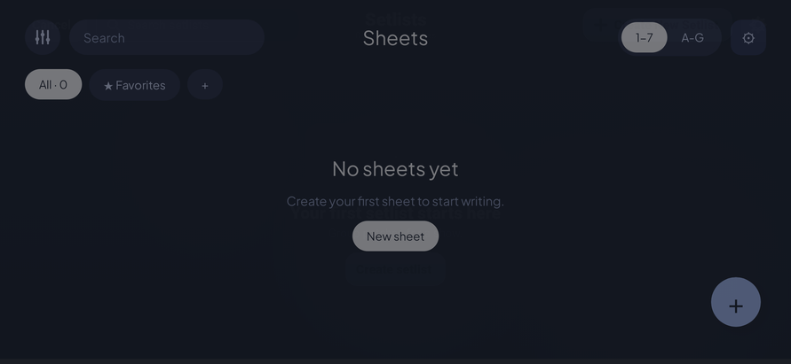
Projects
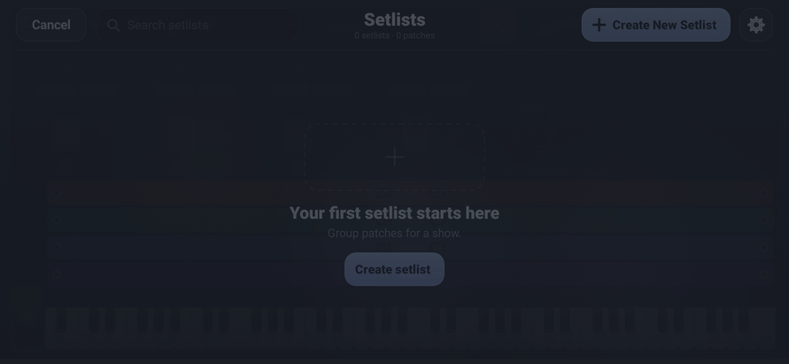
Clavier virtuel — case Layer deployee
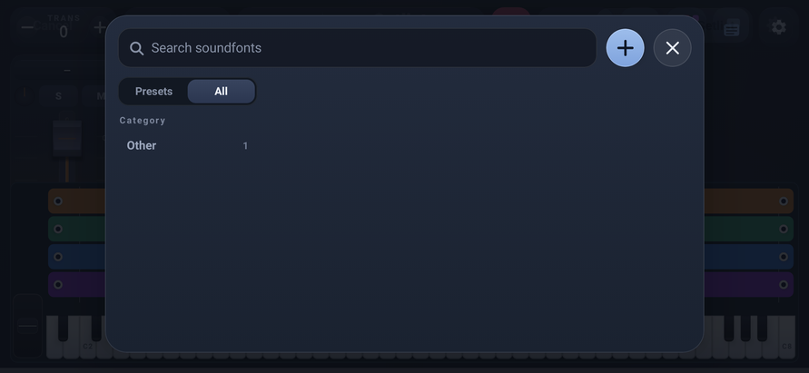
Fenetre soundfont — contour leger + ombre sous la case
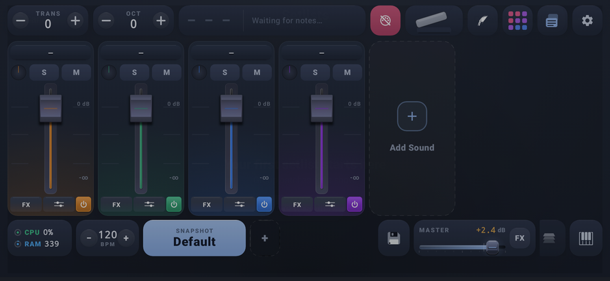
Fenetre Scenes
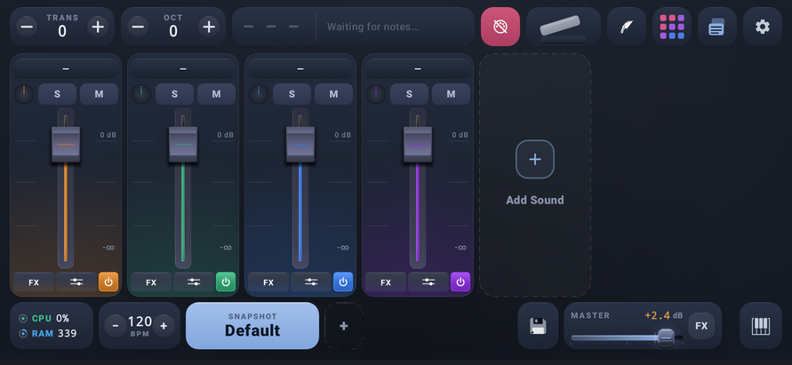
Reglages de piste
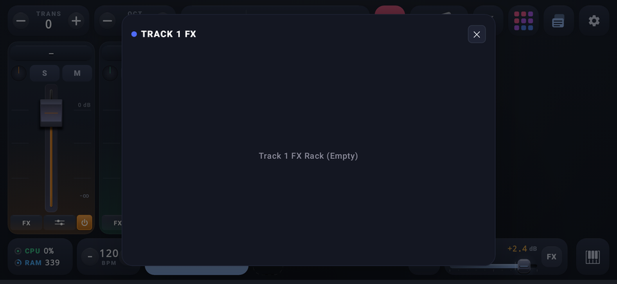
Effets
MIDI
Velocite
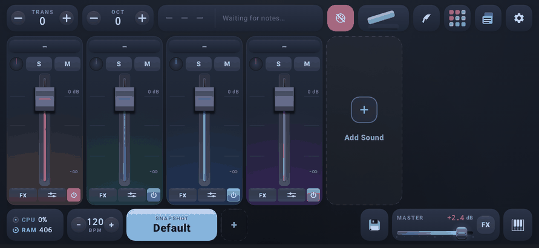
GIF — pedale sustain : pedalier MIDI externe (40 frames)
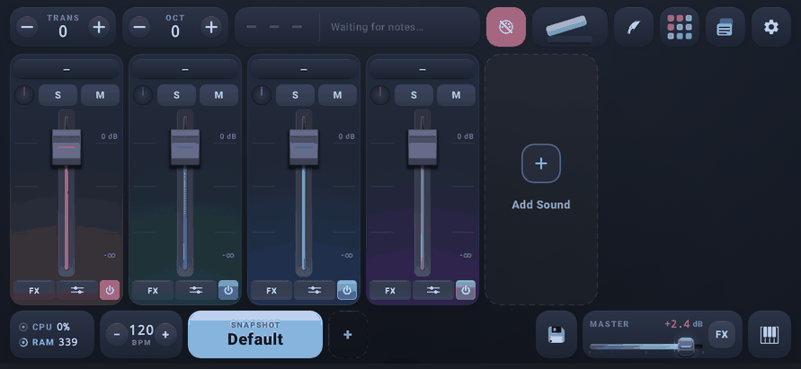
GIF — pedale sustain : appui sur la case (40 frames)